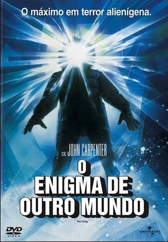

A Coisa (1982)

Sinopse: Em uma estação de pesquisa na Antártida, um grupo de cientistas se depara com uma criatura alienígena parasita que pode assumir a forma de qualquer ser vivo que assimila. À medida que a paranoia cresce e a desconfiança se instala entre os membros da equipe, eles percebem que qualquer um pode ser "A Coisa", levando-os a uma luta brutal pela sobrevivência contra um inimigo que não pode ser identificado.
Diretor: John Carpenter
Elenco Principal: Kurt Russell (R.J. MacReady), Wilford Brimley (Dr. Blair), T.K. Carter (Nauls), David Clennon (Palmer), Keith David (Childs), Richard Dysart (Dr. Copper).
Bilheteria Mundial: Aproximadamente US$19.6 milhões
Curiosidades:
- Um remake do filme "O Monstro do Ártico" (1951), baseado no conto "Who Goes There?" de John W. Campbell Jr.
- Apesar de ter sido um fracasso de bilheteria em seu lançamento, "A Coisa" ganhou status de cult e é hoje considerado um dos maiores filmes de terror e ficção científica de todos os tempos.
- É a primeira parte da "Trilogia do Apocalipse" de John Carpenter, que inclui também "O Príncipe das Sombras" e "Na Boca do Loucura".
- Os efeitos práticos de maquiagem e criatura, criados por Rob Bottin, são altamente elogiados por sua inovação e realismo perturbador.